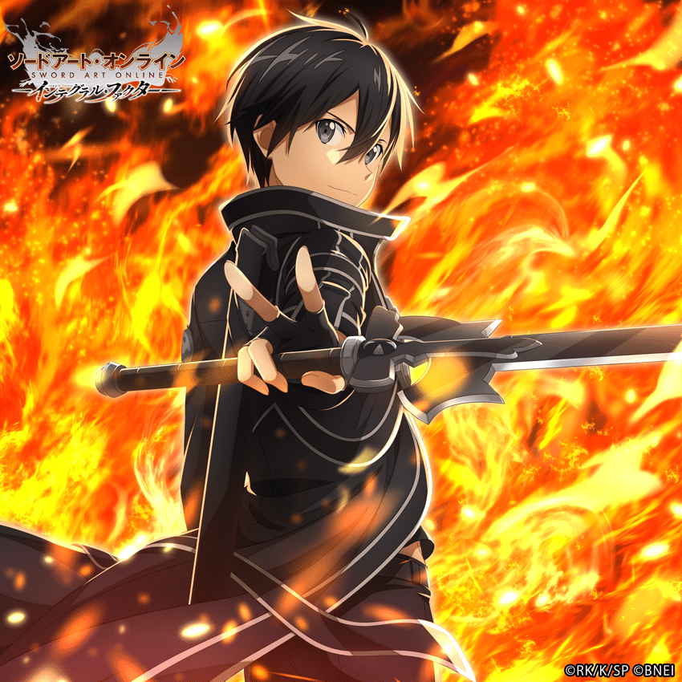

Welcome to Animania!
 |
|
|  |
The Black Swordsman
Enter Kirito the blackswordsman AKA Kazuto Kirigiya, the face of the Funimation developed show Sword Art Online. The show realease in 2012 and fans were taken away by this masterpiece of a show. Funimation has promised the winners to make their show look as beautiful and masterful as this.